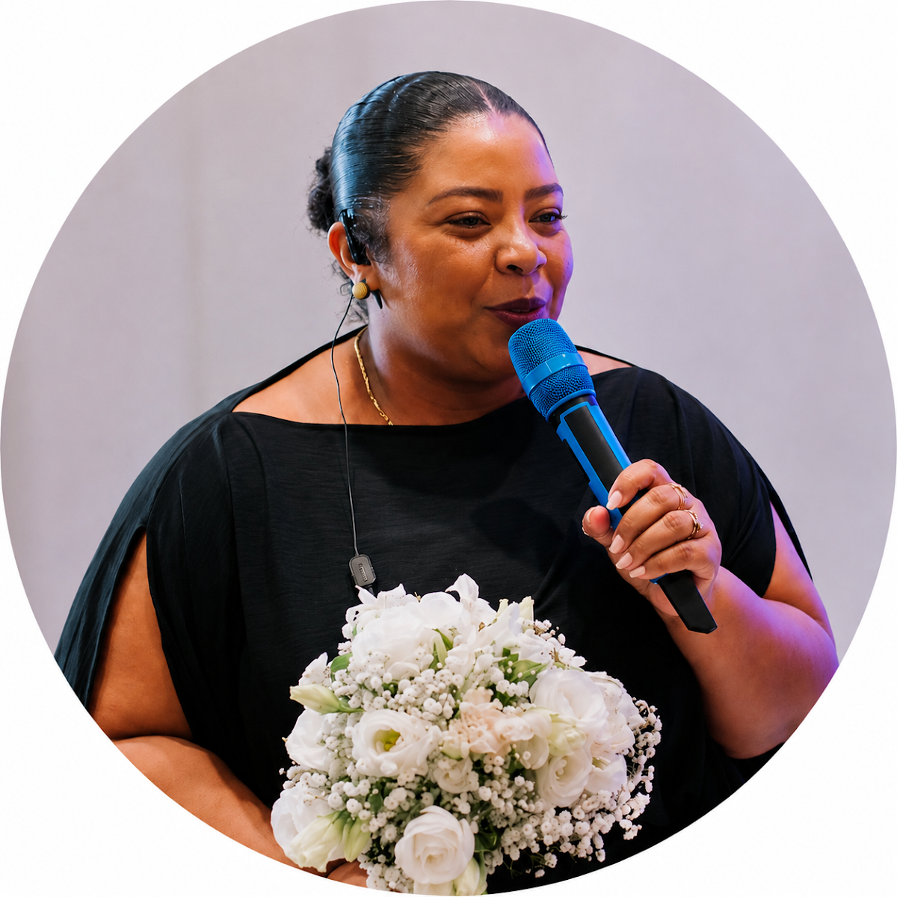
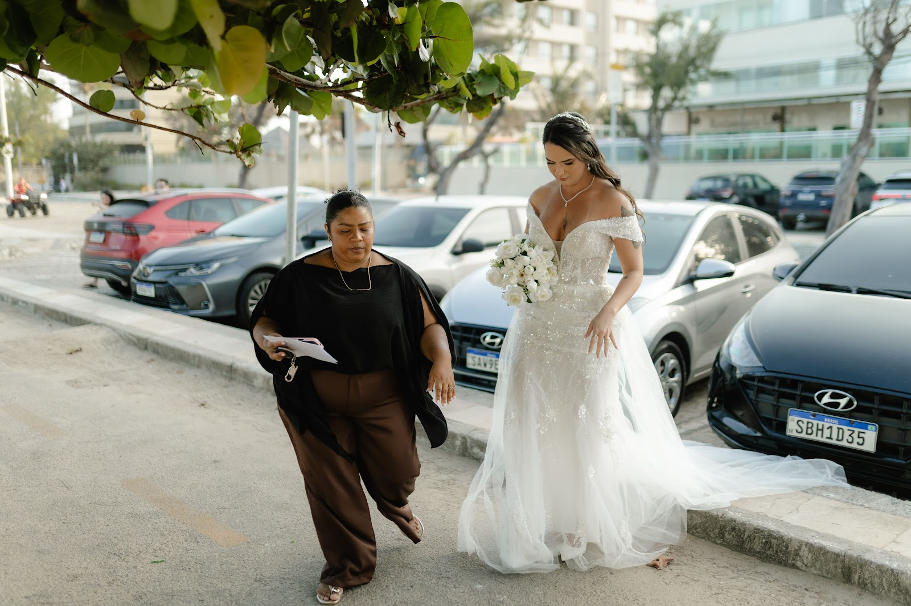
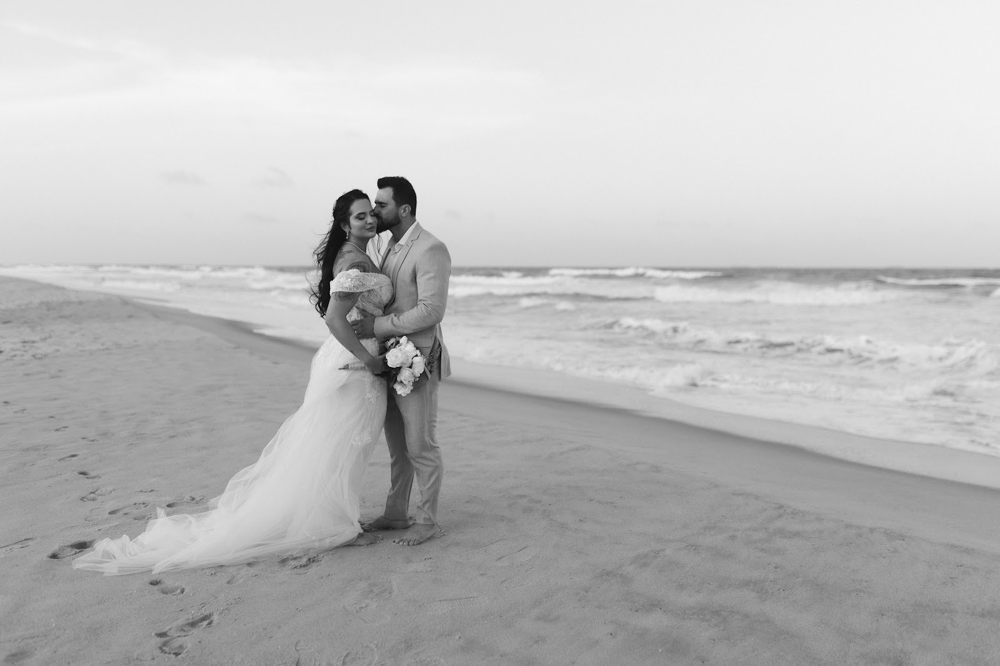

Assessoria e cerimonial com Nathália Andrade: organização, calma e presença do primeiro contato aos últimos instantes da festa.
Conversar com a Nath
Assessoria e cerimonial para o grande dia, com alguém que vira amiga durante o noivado.
Uma festa organizada de verdade, para a família curtir o momento do bebê.
Entender os medos e as expectativas de vocês.
Construir a festa junto, passo a passo.
Conduzir todos os fornecedores no dia.
Resolver o que aparecer sem tirar a paz de ninguém.
5 perguntas rápidas e você me manda o resumo pronto pelo WhatsApp.
“Seu olhar atento, sua organização impecável e sua calma mesmo nos momentos mais delicados fizeram toda a diferença.”
Matheus e Caroline“Conseguiu traduzir muito bem todos os medos e expectativas e construiu uma festa linda conosco.”
Noivos · Google“Foi a cerimonialista do aniversário de 1 ano do meu filho e simplesmente perfeita.”
Mãe · Google

WhatsApp: (85) 98418-3617 · Atendimento com hora marcada em Fortaleza